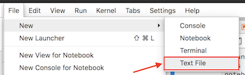
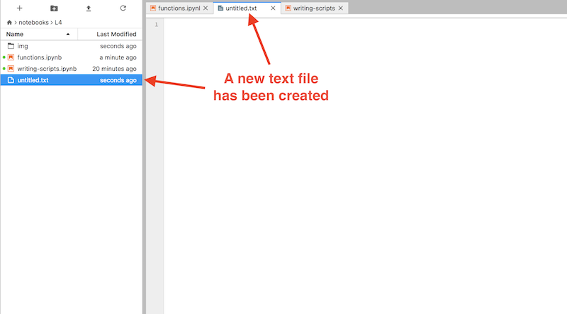
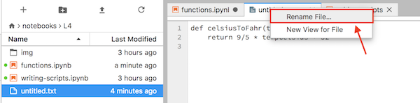
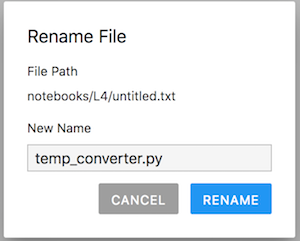

Writing script files¶
Up to this point we have been keeping our Python code and Markdown comments in a single Jupyter notebook document.
This is great, but there are some cases, like when you have long Python code blocks or a set of functions used in many notebooks, in which you may want to have Python code in a separate document to make sure your Jupyter notebook is easy to read (and use).
An alternative to typing in all of the commands you would like to run is the list them in a Python script file.
A Python script file is simply a file containing a list of the commands you would like to run, normally with one command per line, and formatted in the same way as if you were to type them in.
Python script files traditionally use the .py file extension in their names.
The general concept of a script file¶
Because a Python script file is simply a list of commands that you might otherwise type into a Python cell in a Jupyter notebook or a Python console, we can quite easily create a basic script file and test things out.
Getting started¶
First, we need to create a new text file by clicking on File -> New -> Text File in the JupyterLab menu bar.

This will create a new tab in your JupyterLab window that should look something like that below, a blank slate.

Start by copying and pasting the text below into your new text file editor panel.
def celsius_to_fahr(temp_celsius):
return 9/5 * temp_celsius + 32
Saving a text file as a Python file¶
As it turns out, Python scripts are just regular text files with the .py file extension to identify them as source code for Python. In order for our new text file to be detected as a Python source file in JupyterLab we thus need to rename it to have a .py file extension. You can rename the file by right clicking on the tab titled untitled.txt and renaming it as temp_converter.py. Be sure you change the .txt file extension to .py.


Be sure to save your temp_converter.py file after making your changes. If all goes well, you should now see the Python syntax is highlighted in different colors in the JupyterLab editor panel. We’ll return later to some best practices for writing script files, but for now let’s continue with how to use our functions saved in the Python file we just created.
Saving and loading functions¶
Naturally, after saving functions such as the one above to a script file, it is important to know how to access those functions from within a Juypter notebook. As noted earlier, quite often it is useful to create a dedicated function library for functions that you use frequently when doing data analysis, for example. Basically this is done by listing useful functions in a single .py file from which you can then import and use them whenever needed.
Saving functions in a script file¶
Before we move on to discussing how to use functions in a script file, let’s add a few more functions we have been using to our script. Simply copy and paste the text below into your temp_converter.py file leaving one blank line between each function.
def kelvins_to_celsius(temp_kelvins):
return temp_kelvins - 273.15
def kelvins_to_fahr(temp_kelvins):
temp_celsius = kelvins_to_celsius(temp_kelvins)
temp_fahr = celsius_to_fahr(temp_celsius)
return temp_fahr
Don’t forget to save your changes!
Calling functions from a script file¶
Now that we have saved our temperature conversion functions into a script file we can start using them.
Making sure we’re in the right working directory¶
Hopefully you have saved your temp_converter.py file in the same location as this Jupyter notebook (06-writing-scripts.ipynb). If so, that’s good, but we need to do one more thing to be able to start working with the script file. We need to change the working directory in Jupyter Lab to be the one where the temp_converter.py exists.
First, we can see which files are present in the directory where we are currently working using an IPython magic command called %ls.
%ls
00-motivation.ipynb* 06-writing-scripts.ipynb*
01-computers-and-programs.ipynb* 07-modules.ipynb*
02-python-basics.ipynb* 08-exercises.ipynb*
03-for-loops.ipynb* 09-references.ipynb*
04-conditional-statements.ipynb* __pycache__/
05-functions.ipynb* temp_converter.py*
%ls allows us to see the files located in the directory where we are currently working. Your output from %ls may look different than that above, but don’t worry. As long as you see the file temp_converter.py, you should be all set to proceed.
If you do not see the temp_converter.py file in the list of files from %ls, then you will need to take an additional few steps, which differ depending on what files you see.
If you see the list of notebooks above (e.g.,
00-motivation.ipynb,01-computers-and-programs.ipynb, …) but do note see thetemp_converter.pyfile, then you should make sure you have saved thetemp_converter.pyfile in the notebooks directory for Chapter 1. The easiest way to do this would be to use the file browser in Jupyter Lab, find thetemp_converter.pyfile, right click on it and select Copy, navigate to thepart1/chapter-01/nbdirectory in the file browser, and right click again in the space beneath the list of files to paste a copy of thetemp_converter.pyfile in that location.If you do not see the list of notebooks above, you may need to change directories to be in the Chapter 1 notebooks directory. For example, if you see
_static/ back-matter/ index.rst part2/ appendices/ conf.py page_builder.py part3/ authors.rst front-matter/ part1/ requirements.txt
you are working in the base
sourcedirectory. You can change directories to the notebooks directory for Chapter 1 by typing%cd part1/chapter-01/nb
Confirming we are in the correct directory¶
If all has gone well you should now see temp_converter.py among the files when you type %ls in a Python cell. Try that out below.
%ls
00-motivation.ipynb* 06-writing-scripts.ipynb*
01-computers-and-programs.ipynb* 07-modules.ipynb*
02-python-basics.ipynb* 08-exercises.ipynb*
03-for-loops.ipynb* 09-references.ipynb*
04-conditional-statements.ipynb* __pycache__/
05-functions.ipynb* temp_converter.py*
If you see temp_converter.py in the list of files above you are all set to continue.
Importing our script functions¶
Let’s now import our celsius_to_fahr() function from the other script by adding a specific import statement in the Python cell below: from temp_converter import celsius_to_fahr
# DO NOT RUN THIS CELL
# This cell is only needed for generating the web page and book documents
%cd ../../../_static/part1/chapter-01/
from temp_converter import celsius_to_fahr
Using our script functions¶
Let’s now use the function so that we can see that it is working. We can print the temperature in Fahrenheit at which water freezes using our celsius_to_fahr() function in the cell below.
print("The freezing point of water in Fahrenheit is:", celsius_to_fahr(0))
The freezing point of water in Fahrenheit is: 32.0
You should get following output:
The freezing point of water in Fahrenheit is: 32.0
Importing multiple functions¶
It is also possible to import more than one function at a time by listing and separating them with a comma.
from my_script import func1, func2, func3
Importing all functions from a script¶
Sometimes it is useful to import the whole script and all of its functions at once. Let’s use a different import statement and test that all functions work. This time we can type import temp_converter as tc.
import temp_converter as tc
Just like the examples we have seen earlier with the math library, such as using math.sin(), we can now use our functions such as tc.celsius_to_fahr(). In the cells below, test our functions as they were used above by printing the freezing point of water in Fahrenheit, absolute zero in Celsius, and absolute zero in Fahrenheit.
print("The freezing point of water in Fahrenheit is:", tc.celsius_to_fahr(0))
The freezing point of water in Fahrenheit is: 32.0
print('Absolute zero in Celsius is:', tc.kelvins_to_celsius(temp_kelvins=0))
Absolute zero in Celsius is: -273.15
print('Absolute zero in Fahrenheit is:', tc.kelvins_to_fahr(temp_kelvins=0))
Absolute zero in Fahrenheit is: -459.66999999999996
Creating a temperature calculator¶
So far our functions have had only one parameter, but it is also possible to define a function with multiple parameters. Let’s now make a simple temp_calculator function that accepts temperatures in Kelvins and returns either Celsius or Fahrenheit. The new function will have two parameters:
temp_k= The parameter for passing temperature in Kelvinsconvert_to= The parameter that determines whether to output should be in Celsius or in Fahrenheit (using the lettersCorF)
Defining the function¶
Let’s start defining our function by giving it a name and setting the parameters.
def temp_calculator(temp_k, convert_to):
Adding some conditional statements¶
Next, we need to add conditional statements that check whether the desired output temperature should be in Celsius or Fahrenheit, and then call the corresponding function that was imported from the temp_converter.py file.
def temp_calculator(temp_k, convert_to):
# Check if user wants the temperature in Celsius
if convert_to == "C":
# Convert the value to Celsius using the dedicated function for the task that we imported from another script
converted_temp = kelvins_to_celsius(temp_kelvins=temp_k)
elif convert_to == "F":
# Convert the value to Fahrenheit using the dedicated function for the task that we imported from another script
converted_temp = kelvins_to_fahr(temp_kelvins=temp_k)
Returning the result¶
Next, we need to add a return statement so that our function sends back the value that we are interested in.
def temp_calculator(temp_k, convert_to):
# Check if user wants the temperature in Celsius
if convert_to == "C":
# Convert the value to Celsius using the dedicated function for the task that we imported from another script
converted_temp = kelvins_to_celsius(temp_kelvins=temp_k)
elif convert_to == "F":
# Convert the value to Fahrenheit using the dedicated function for the task that we imported from another script
converted_temp = kelvins_to_fahr(temp_kelvins=temp_k)
# Return the result
return converted_temp
Adding a docstring¶
Finally, since we want to be good programmers, we should add a short docstring at the beginning of our function that explains what the function does and how the parameters work.
def temp_calculator(temp_k, convert_to):
"""
Function for converting temperature in Kelvins to Celsius or Fahrenheit.
Parameters
----------
temp_k: <numerical>
Temperature in Kelvins
convert_to: <str>
Target temperature that can be either Celsius ('C') or Fahrenheit ('F'). Supported values: 'C' | 'F'
Returns
-------
<float>
Converted temperature.
"""
# Check if user wants the temperature in Celsius
if convert_to == "C":
# Convert the value to Celsius using the dedicated function for the task that we imported from another script
converted_temp = kelvins_to_celsius(temp_kelvins=temp_k)
elif convert_to == "F":
# Convert the value to Fahrenheit using the dedicated function for the task that we imported from another script
converted_temp = kelvins_to_fahr(temp_kelvins=temp_k)
# Return the result
return converted_temp
Testing the new function¶
That’s it!
Now we have a temperature calculator that has a simple option for the user where they can change the output using the convert_to parameter. As we also added the short docstring at the beginning of the function, we can use the help() function in Python to see how our function should be used. You could now run the Python cell below and then try running help(temp_calculator) to see the docstring.
When working in a Jupyter Notebook, reloading modules can be a bit challenging. The easiest option is to restart the IPython kernel by going to Kernel -> Restart kernel…. Note that this will delete all variables currently stored in memory in the Jupyter notebook you’re using, so you may need to re-run some cells.
help(tc.temp_calculator)
Help on function temp_calculator in module temp_converter:
temp_calculator(temp_k, convert_to)
Function for converting temperature in Kelvins to Celsius or Fahrenheit.
Parameters
----------
temp_k: <numerical>
Temperature in Kelvins
convert_to: <str>
Target temperature that can be either Celsius ('C') or Fahrenheit ('F'). Supported values: 'C' | 'F'
Returns
-------
<float>
Converted temperature.
Using the temp_calculator function¶
Let’s now see how our function works!
temp_kelvin = 30
temperature_c = tc.temp_calculator(temp_k=temp_kelvin, convert_to="C")
print("The temperature", temp_kelvin, "Kelvins is", temperature_c, "degrees Celsius.")
The temperature 30 Kelvins is -243.14999999999998 degrees Celsius.
Exercises¶
Add exercises.